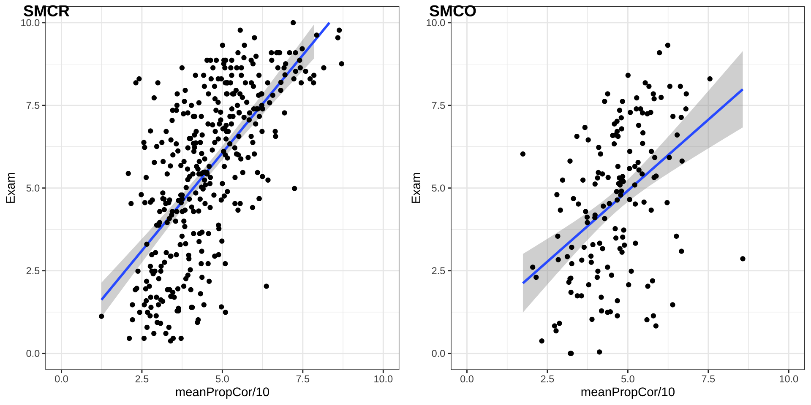

Statistical Reasoning
Introduction to statistical reasoning
Course setup
We have structured the course with clear chronological learning activities. On a weekly basis, we expect you to engage with the course materials in the following way:
- Read the book chapter globally. Focus on developing an overview of key concepts, leaving smaller details for later steps.
- Complete the preparatory assignment before attending the tutorial. Deep read the referenced paragraphs while working on the assignment.
- At the end of each preparatory assignment, reflect on your progress in understanding the content you’ve studied. Formulate questions for the tutorial.
- Actively participate in the tutorial which focuses on hands-on practice and discussion of difficult concepts.
- Based on your assessment of your learning progress (updated at the end of each tutorial), review and revise content which you have not yet mastered. Group these based on the learning objectives of the course and make a plan to review and practice them.
Resource: Syllabus
Learning goals
Goals
- Conceptual understanding of statistics
- SPSS perform analysis
- SPSS interpreting output
- SPSS data wrangling
- SPSS data visualisation
- Statistical test selection
- Critical reflection
- Self directed learning
Statistical tests
- \(\chi^2\) test
- t-tests (including bootstrap)
- one-sample
- paired samples
- independent samples
- independent one-way ANOVA
- independent two-way ANOVA
- (multiple) regression (confounders)
- moderation (interaction with both categorical and continuous variables)
- mediation analysis
Tutorials
- Tutorial participation is mandatory
- Mis max 3
- In class progress check

Grading
\(\text{Final grade} = 0.9 \times \text{exam grade} + \text{proportion completed PA}\)
- Exam
- PA = Preparatory Assignment (VO in Dutch)
Preparatory Assignment
- 11 PA’s/VO’s in total
- You need to have done the PA with effort and reflect on your progress.
\[\text{proportion completed PA} = \frac{\text{Number of PA's done}}{11}\]
Course changes
Changes based on feedback, course evaluation, and redesign.
- SPSS basics added to introduction chapter.
- PROCESS instructions and video’s updated to version 5.
- New statistical test selection flowchart added.
- Self reflection reduced to 3
Learning
Reasoning in statistics
Statistical Literacy
- Knowledge (Basic understanding of concepts)
- Identify
- Describe
- Skills (Ability to work with statistical tools)
- Translate
- Interpret
- Read
- Compute
Statistical Reasoning
- Understanding
- Explain why
- Explain how
Statistical thinking
- Apply
- What methods to use in a specific situation
- Critique
- Comment and reflect on work of yourself and others
- Evaluate
- Assigning value to work
- Generalize
- What does variation mean in the large scheme of life
Empirical Cycle
By Adriaan de Groot
The components
- Observation
- Idea for hypothesis
- Induction
- General rule
- Hypothesis
- Deduction
- Expectation / Prediction
- Operationalization
- Testing
- Test hypothesis
- Compare data to prediction
- Evaluation
- Interpret results in terms of hypothesis
Explained by Annemarie Zandscholten
End
Contact